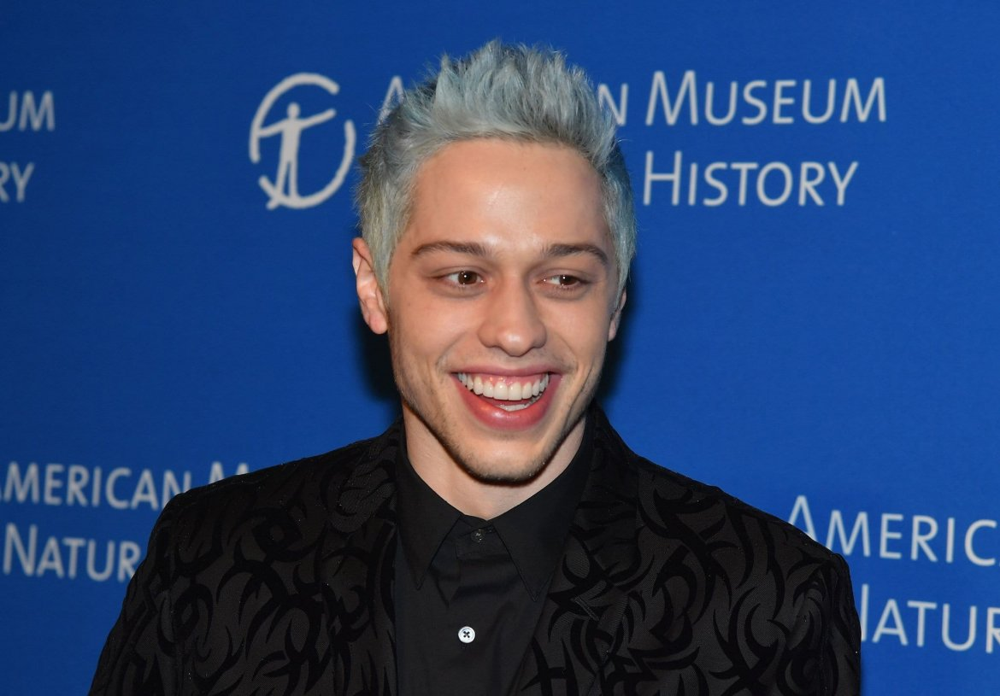
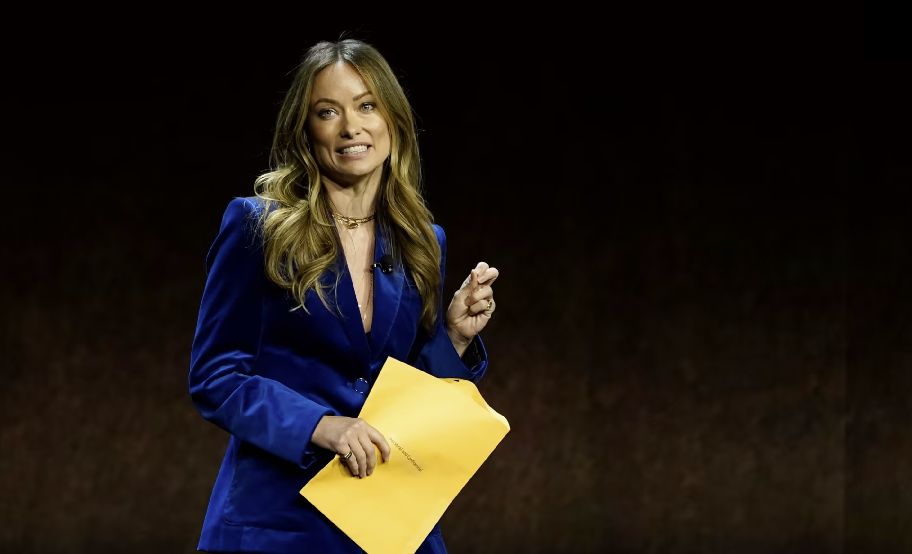
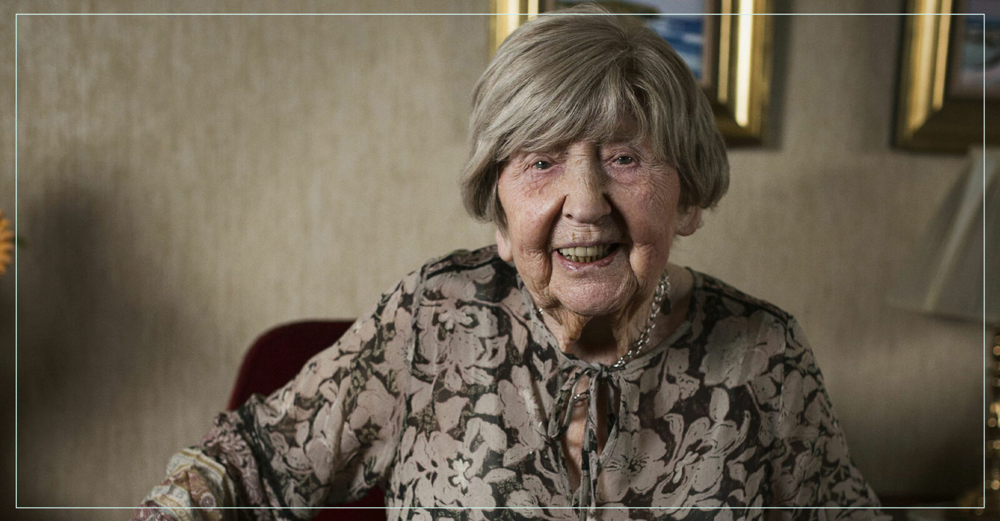
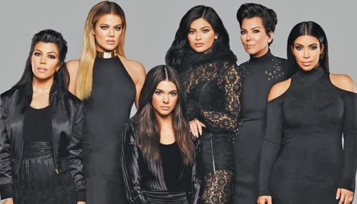

Fråga 1: Superbowl är en stor händelse, och inte bara för matchens skull
a. Vilka uppträdde på årets superbowl? 0.5 poäng per rätt artist - 2.5 totalt
Dr. Dre, Snoop Dogg, Eminem, Mary J. Blige och Kendrick Lamar
b. Vilket lag vann Superbowl 2022?
Los Angeles Rams
c. En av de största skandalerna under en av Superbowls halvtidsakt skedde då Justin Timberlake och Janet Jackson uppträdde tillsammans. Vad hände då?
Justin tog söner Janets topp så hon flashade
Fråga 2: Efter att Britney blev fri från sin pappas konservatorskap var många spända på vad som skulle vara nästa steg för popstjärnan.
a. Hon gick nyligen ut med en stor nyhet - vadå?
Hon är gravid!
b. Vad hette hennes debutsingel?
...Baby one more time
Fråga 3: Denna man är en komiker och skådespelare, men han är även känd för sina flickvänner.
a. Vad heter han?
Pete Davidson
b. Vem är hans nuvarande flickvän?
Kim Kardashian
c. Han var tidigare förlovad med en känd popartist. Vem då?
Ariana Grande
Fråga 4: Sociala medier har varit språngbrädan för flera av dagens kändisar
a. Vad heter denna SoMe-kändis?
Addison Rae
b. Vilken app slog hon igenom i?
TikTok
c. Barstool tog nyligen fram en lista där hon knep en 10e-plats. Vad var det för lista?
Top 10 Female Singers of All Time
Fråga 5: Olivia Wilde fick här custody papers givna då hon stod på Cinemacon 2022 mässcen.
a. Vem är det hon skiljer sig från?
Jason Sudeikis
b. Vilken popstjärna och skådespelare är hon tillsammans med idag?
Harry Styles
c. Wilde har nyligen bytt bana i karriären och är numera regissör. Vad heter den framgångsrika filmen som var hennes regissördebut?
Book Smart
Fråga 6: Denna Sverige-kändis gick tyvärr bort tidigare i år.
a. Vad hette hon? förnamn räcker
Dagny Carlsson
b. Vad var hennes senaste yrkestitel?
Bloggare
Fråga 7: Det går inte att ha ett kändis-quiz utan att ha med denna klan
a. Vad heter familjen? Jag söker två efternamn
Kardashian-Jenner
b. Alla kvinnliga namn i familjen har något gemensamt - vad?
De börjar på bokstaven K
c. Familjens namn blev kända då pappan var advokat åt en kändis i ett brottsfall. Vem representerade han?
O.J. Simpson
Fråga 8: Tom Holland och Zendaya är ett populärt par i Hollywood.
a. Vilken filmserie medverkar de i tillsammans?
Spiderman
b. Nyligen släpptes säsong 2 av den framgångsrika ungdomsserie Zendaya medverkar i. Vad heter den?
Euphoria
Fråga 9: Denna man gick från WWE-mästare till skådespelare.

a. Vad heter han?
John Cena
b. Vilken roll tog han sig nyligen an i antihjälte-filmen the Suicide Squad?
Peacemaker
c. Han är lite av en walking meme - vad skämtas det om?
Att han är osynlig